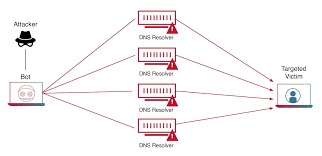
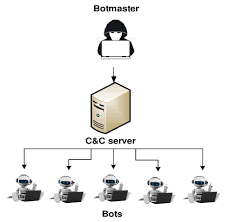

Ataque DDoS: Un ataque DDoS es un intento malicioso de interrumpir el tráfico normal de un servidor, servicio o red, sobrecargándolo con una avalancha de tráfico de Internet.

Ordenador Zombie: Un equipo infectado que se utiliza sin el conocimiento del propietario para realizar actividades maliciosas como enviar spam o participar en ataques DDoS.
Ciberdelincuente: Un individuo que usa herramientas digitales para cometer actos ilícitos o fraudulentos, como el robo de información o la creación de malware.
Botmaster: La persona que controla una botnet, una red de ordenadores comprometidos utilizados para realizar actividades maliciosas a gran escala.

Botnet: Una red de ordenadores comprometidos, controlados de forma remota por un atacante, que pueden ser utilizados para lanzar ataques coordinados como DDoS.
Ransomware: Un tipo de malware que cifra los archivos de la víctima, y los atacantes exigen un pago para liberar el acceso a los datos afectados.
Disclaimer: Un mensaje o advertencia que informa a los usuarios de posibles riesgos o responsabilidades, a menudo utilizado en sitios web o software.
The Morris Worm: Uno de los primeros gusanos informáticos distribuidos a través de Internet, que causó daños generalizados en 1988.
Ciberwarfare: La guerra cibernética implica ataques digitales entre estados o naciones, a menudo destinados a dañar infraestructuras críticas.
Stuxnet: Un gusano informático dirigido a sistemas de control industrial, que fue diseñado para dañar infraestructuras críticas.
Moonlight Maze: Un ataque cibernético a largo plazo dirigido a instituciones gubernamentales de EE. UU. a finales de los 90, conocido por su escala y duración.